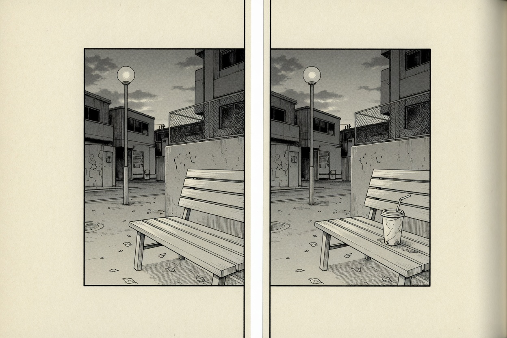

The prompting path · 04 · Craft
Leave the gutter empty
The cut lives in the space you do not draw. Prompt the panel. Leave the furniture of the page alone.

A gutter is the blank between panels. Readers cross it and understand that time moved. You can see it in the plate: the corner is the same, and then a cup is on the bench. Nobody needed a caption that said “later.”
If you ask a model for “a manga page” in one breath, it will try to be author, penciller, and letterer at once. It will glue the panels into a poster and put tiny unreadable marks in the balloons. Borders, page numbers, and captions are rules and type. They are the part a model is worst at, and the part you can do exactly afterwards.
What to leave out
Words. Any of them. Speech, sound effects, signs you need someone to read. Reserve the area if a balloon will sit there — “open paper in the upper right” — and put the words in later, in a face you chose, spelled the way you spelled them.
Speed lines, as a habit. They are a specific shot: impact, travel, panic. A conversation does not want them. Once you say “manga,” many models add them anyway. Take them back. “No speed lines. Still air. The background stops at the wall.”
A crowd of effects. Flare, bloom, particles, a color grade. You are not failing to be modern. You are keeping the panel printable. Ink, paper, one tone.
The other panels. Do not describe panel two inside the prompt for panel one. The model will try to show both stories at once, and you will get a summary instead of a cut.
Empty is an instruction
Negative space is not an absence of instructions. Write the empty part the way you write the full part. People skip this and then crop the result until it behaves. Cropping is a correction. The empty third is the composition.
A single manga panel on a larger sheet of blank paper, with a clear margin around the panel border. Inside the panel: a street corner at dusk, an empty wooden bench, ink line, light tone only in the shadow of the building. No second panel, no page number, no caption, no speech balloons, no sound effects. The sky inside the panel is mostly open paper.
When you place two pictures like that side by side, the margin you insisted on becomes the gutter. The reader makes the cut. You do not draw the cut. The second prompt is allowed to change one fact — the cup is on the bench now — and should repeat the corner so the reader trusts it is the same place.
If you prompt a whole page because you want to see rhythm, a tall panel beside two short ones, say the layout as a map and still forbid lettering. Expect to redraw the panels that matter. A page prompt is a thumbnail you are allowed to throw away. The finished line is still one panel at a time.
White is not unfinished. In black-and-white comics, white is a color you spend.
A panel that is mostly open paper and one dark coat will read from across a room. A panel that is full reads only with the page held close, and even then the eye does not know where to enter.